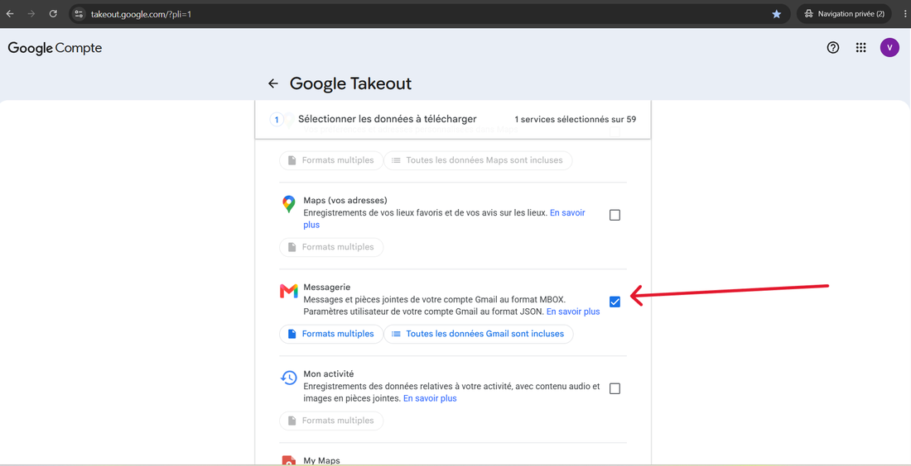
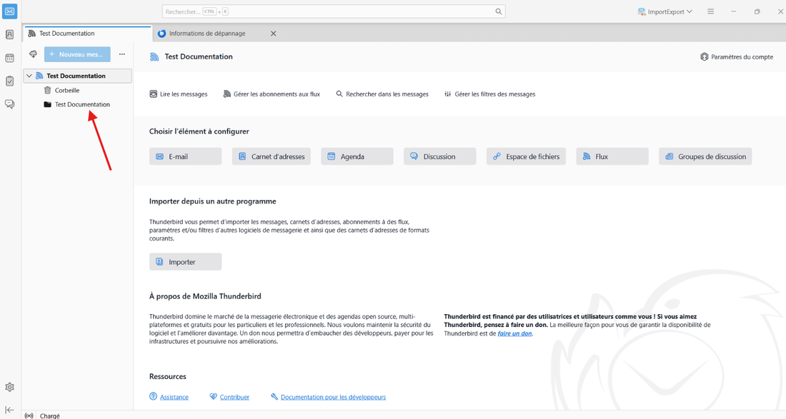

01Contexte
Lorsqu’un collaborateur quitte l’entreprise, son compte Google Workspace doit être supprimé pour libérer la licence et sécuriser l’accès aux données. Or la messagerie Gmail ne fait pas partie des données transférables lors de la suppression d’un compte, contrairement à Drive ou à Agenda : les messages doivent donc être sauvegardés avant.
L’entreprise utilise l’édition Business Standard, qui n’inclut pas Google Vault. En tant que super administrateur du domaine, je suis chargé de cette opération.
02Expression du besoin
- obtenir une copie complète de la boîte : messages, pièces jointes et libellés ;
- pouvoir consulter cette copie plus tard, sans compte Google ni licence ;
- utiliser un format ouvert, sans licence supplémentaire ni accès délégué à un outil tiers ;
- conserver l’archive en trois exemplaires : disque dur externe, NAS et Google Drive de l’entreprise ;
- disposer d’une procédure documentée, reproductible par un autre technicien.
J’ai comparé cinq solutions avant de retenir la méthode décrite :
| Solution | Principal argument | Décision |
|---|---|---|
| Google Vault | Non inclus dans l’édition Business Standard (module payant) | Non retenue |
| Google Takeout | Outil officiel et gratuit, aucun accès supplémentaire, format MBOX ouvert | Retenue |
| GYB (Got Your Back) | Clé de compte de service donnant un accès étendu à tout le domaine | Non retenue |
| Sauvegarde tierce | Coût mensuel et données confiées à un tiers | Non retenue |
| Licence Archived User | Coût par utilisateur, ne permet pas de supprimer le compte | Non retenue |
03Solution et mise en œuvre
Google Takeout produit un fichier MBOX, format ouvert que Mozilla Thunderbird, logiciel gratuit et open source, lit nativement. La procédure se déroule en sept étapes :
- A – Accéder à la boîte du collaborateur
Depuis la console d’administration, réinitialisation du mot de passe du compte, puis connexion en navigation privée pour ne pas mélanger les sessions.
- B – Exporter la messagerie avec Google Takeout
Sélection du seul service « Messagerie », tous les messages inclus, export unique au format ZIP de 10 Go avec lien de téléchargement par e-mail.
- C – Télécharger et extraire l’archive
Extraction du fichier MBOX, avec 7-Zip ou WinRAR pour les archives de plus de 2 Go (format zip64).
- D – Préparer Thunderbird
Création d’un compte de flux, utilisé comme conteneur local pour accueillir l’archive.
- E – Importer le fichier MBOX
Copie du fichier dans le dossier du compte, renommé sans extension, puis redémarrage de Thunderbird.
- F – Retrouver les messages par libellé (facultatif)
Création de dossiers virtuels à partir de l’en-tête X-Gmail-Labels écrit par Takeout.
- G – Vérifier et conserver la copie
Contrôle du nombre de messages, réalisation des trois copies et contrôle de leur taille. Le compte n’est supprimé qu’après ces vérifications.
04Tests et résultats
Tests. La procédure a été testée de bout en bout sur un compte de test sans activité réelle, afin qu’aucune donnée personnelle n’apparaisse dans la documentation. Le nombre de messages affiché dans Thunderbird correspond à celui de la boîte d’origine.
Incidents résolus. Sept difficultés ont été rencontrées et documentées avec leur symptôme, leur cause et leur solution, par exemple :
- téléchargement bloqué par une vérification d’identité de Google : désactivation temporaire du défi de connexion depuis la console d’administration ;
- aucune option d’import MBOX sur le compte de flux : copie directe du fichier dans le dossier du compte ;
- recherche par libellé sans résultat : Takeout écrit les libellés dans la langue du compte, il faut utiliser leur orthographe exacte.
Protection des données. La procédure est limitée aux collaborateurs ayant quitté l’entreprise, sur demande validée par la direction ou les ressources humaines. Elle prévoit une durée de conservation limitée, le chiffrement des copies, la journalisation des accès et la destruction des archives à l’échéance. Ce chapitre a été relu par la DPO de l’entreprise.




05Limites et perspectives
- L’accès à la boîte impose de réinitialiser le mot de passe du collaborateur, acceptable uniquement pour un compte voué à la suppression.
- La procédure est manuelle et adaptée à un usage ponctuel.
- Perspectives : tester la restauration d’une archive depuis un autre poste et évaluer GYB si le nombre de comptes à archiver devient important.
06Compétences mobilisées
- Gérer le patrimoine informatiqueSauvegarde des données de l’entreprise, choix d’un format ouvert et règle de conservation en trois exemplaires.
- Répondre aux incidents et aux demandes d’assistance et d’évolutionDiagnostic et résolution de sept incidents rencontrés lors de la mise au point de la procédure.
- Travailler en mode projetÉtude comparative de cinq solutions, justification du choix, rédaction d’une documentation validée.